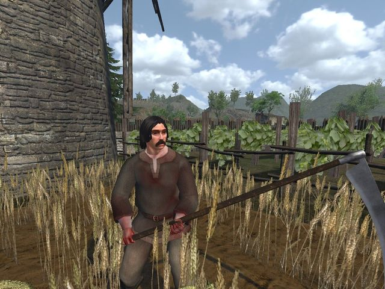
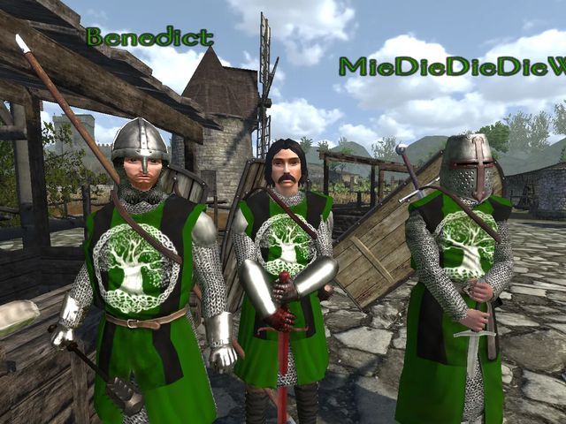
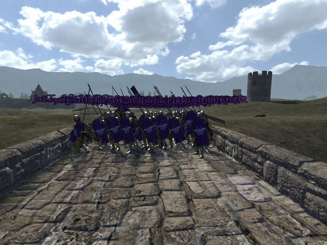

Mount & Blade: Warband · Persistent Kingdoms
Normandiya haritasında, kalıcı karakterlerle oynanan bir rol yapma sunucusu. Oyundaki sunucu listesinde Sellennia-RP adıyla görünüyor.
- Durum
- Açık
- Oyuncu
- En fazla 20
- Giriş
- Şifreli
| Sunucu | Modül | Harita | Oyuncu |
|---|---|---|---|
| ··· | ··· | ··· | ··· |
| Sellennia-RP | Persistent Kingdoms | Normandy | –/20 |
| ··· | ··· | ··· | ··· |
Sunucuda ne var
Kalıcı dünya
Persistent Kingdoms'ta karakterin silinmiyor. Odun kesip satabilir, demircilik yapabilir, at yetiştirebilir ya da bir lordun askeri olabilirsin. Kazandığın para ve eşyalar sen çıktıktan sonra da duruyor.
Krallıklar
Sunucuda birden fazla krallık var. Birine katılıyorsun; sıkılırsan /ayril yazıp ölmeden ayrılabiliyorsun.
Kişisel depo
/depo yazınca 12 yuvalı bir sandık açılıyor. Ona sadece sen ulaşıyorsun, içindekiler kayıtlı kalıyor. Eşyanı kasabadaki sandığa taşımadan saklamanın yolu bu.
Harita
Normandiya. Sende yoksa oyun ilk girişte kendisi indiriyor.
Sohbet komutları
Hepsini oyun içi sohbete yazıyorsun. Unutursan /yardim listeyi gösterir.
> /me kılıcını kınından çeker
* Nick kılıcını kınından çeker
> /do Kapı içeriden sürgülü.
* Kapı içeriden sürgülü. (Nick)
> /roll 20
* Nick zar attı: 14
> /ooc 5 dakika yokum
(( Nick: 5 dakika yokum ))
- Karakterinin yaptığı şeyi anlatır.
/me eylem - Çevrede olan bir şeyi anlatır.
/do durum - Karakter dışı konuşma.
/ooc,/b - Fısıltı. Sadece yanındakiler duyar.
/w,/low - 1 ile n arasında zar.
/roll [n] - Bir şeyi dener; başarılı ya da başarısız çıkar.
/try eylem - Özel mesaj.
/pm isim mesaj - Kişisel deponu açar.
/depo,/envanter - Krallıktan ayrılırsın.
/ayril,/leave - Bu liste.
/yardim,/help
Ekran görüntüleri






Girmek için
Warband ve Workshop'taki Persistent Kingdoms modülü yeterli. Adımlar ayrı sayfada.